Important
You can run this notebook in a live session  or view it on nbviewer
or GitHub.
or view it on nbviewer
or GitHub.
Multi-dimensional Coordinates¶
[1]:
import pathlib
from collections import defaultdict
import h5py
import pandas as pd
import numpy as np
import xarray as xr
import matplotlib.pyplot as plt
from matplotlib.colors import LogNorm,Normalize
import matplotlib.cm as cm
from bluesky_tutorial_utils import nexus, fetch
/home/travis/virtualenv/python3.7.1/lib/python3.7/site-packages/pims/image_reader.py:26: RuntimeWarning: PIMS image_reader.py could not find scikit-image. Falling back to matplotlib's imread(), which uses floats instead of integers. This may break your scripts.
(To ignore this warning, include the line "warnings.simplefilter("ignore", RuntimeWarning)" in your script.)
warnings.warn(RuntimeWarning(ski_preferred))
[2]:
# Un-comment this for better-looking plots on high-resolution screens.
# %config InlineBackend.figure_format = 'retina'
[3]:
fetch.rsoxs_simulation_data();
[4]:
fname = './rsoxs_simulation_data/512-512-128-5.0-40.0-00285-0360.nxs'
da_img = nexus.read_singleimg_nxs(fname)
da_img_chi = nexus.read_singleimg_nxs(fname,sasdata='unwrap')
da_img
[4]:
xarray.DataArray
'I'
- Qx: 512
- Qy: 512
- 0.0 0.0 0.0 0.0 0.0 0.0 0.0 0.0 ... 0.0 0.0 0.0 0.0 0.0 0.0 0.0 0.0
array([[0., 0., 0., ..., 0., 0., 0.], [0., 0., 0., ..., 0., 0., 0.], [0., 0., 0., ..., 0., 0., 0.], ..., [0., 0., 0., ..., 0., 0., 0.], [0., 0., 0., ..., 0., 0., 0.], [0., 0., 0., ..., 0., 0., 0.]], dtype=float16) - Qx(Qx)float16-0.6284 -0.626 ... 0.626 0.6284
array([-0.6284, -0.626 , -0.6235, ..., 0.6235, 0.626 , 0.6284], dtype=float16) - Qy(Qy)float16-0.6284 -0.626 ... 0.626 0.6284
array([-0.6284, -0.626 , -0.6235, ..., 0.6235, 0.626 , 0.6284], dtype=float16)
- lazy :
- False
Extra: Multidimensional Coordinates¶
First let’s look at our initial 2D array
[5]:
da_img
[5]:
xarray.DataArray
'I'
- Qx: 512
- Qy: 512
- 0.0 0.0 0.0 0.0 0.0 0.0 0.0 0.0 ... 0.0 0.0 0.0 0.0 0.0 0.0 0.0 0.0
array([[0., 0., 0., ..., 0., 0., 0.], [0., 0., 0., ..., 0., 0., 0.], [0., 0., 0., ..., 0., 0., 0.], ..., [0., 0., 0., ..., 0., 0., 0.], [0., 0., 0., ..., 0., 0., 0.], [0., 0., 0., ..., 0., 0., 0.]], dtype=float16) - Qx(Qx)float16-0.6284 -0.626 ... 0.626 0.6284
array([-0.6284, -0.626 , -0.6235, ..., 0.6235, 0.626 , 0.6284], dtype=float16) - Qy(Qy)float16-0.6284 -0.626 ... 0.626 0.6284
array([-0.6284, -0.626 , -0.6235, ..., 0.6235, 0.626 , 0.6284], dtype=float16)
- lazy :
- False
First we make a \(Q=\sqrt{Q_{x}^2 + Q_{y}^2}\) array
[6]:
Q = np.sqrt(da_img.Qx*da_img.Qx + da_img.Qy*da_img.Qy)
Q.name = 'Q'
Q.plot()
Q
[6]:
xarray.DataArray
'Q'
- Qx: 512
- Qy: 512
- 0.8887 0.887 0.8857 0.884 0.882 ... 0.882 0.884 0.8857 0.887 0.8887
array([[0.8887, 0.887 , 0.8857, ..., 0.8857, 0.887 , 0.8887], [0.887 , 0.8853, 0.884 , ..., 0.884 , 0.8853, 0.887 ], [0.8857, 0.884 , 0.882 , ..., 0.882 , 0.884 , 0.8857], ..., [0.8857, 0.884 , 0.882 , ..., 0.882 , 0.884 , 0.8857], [0.887 , 0.8853, 0.884 , ..., 0.884 , 0.8853, 0.887 ], [0.8887, 0.887 , 0.8857, ..., 0.8857, 0.887 , 0.8887]], dtype=float16) - Qx(Qx)float16-0.6284 -0.626 ... 0.626 0.6284
array([-0.6284, -0.626 , -0.6235, ..., 0.6235, 0.626 , 0.6284], dtype=float16) - Qy(Qy)float16-0.6284 -0.626 ... 0.626 0.6284
array([-0.6284, -0.626 , -0.6235, ..., 0.6235, 0.626 , 0.6284], dtype=float16)
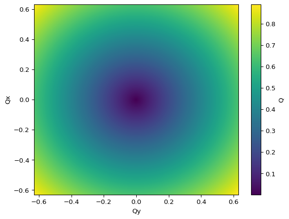
Then we make a \(\chi= \tan^{-1}\left(\frac{Q_{y}}{Q_{x}}\right)\) array
[7]:
CHI = np.arctan2(da_img.Qy,da_img.Qx)*180/np.pi
CHI.name = 'χ'
CHI.plot()
CHI
[7]:
xarray.DataArray
'χ'
- Qy: 512
- Qx: 512
- -135.0 -134.9 -134.8 -134.6 -134.5 ... 45.5 45.34 45.22 45.1 45.0
array([[-135. , -134.9 , -134.8 , ..., -45.22, -45.1 , -45. ], [-135.1 , -135. , -134.9 , ..., -45.1 , -45. , -44.94], [-135.2 , -135.1 , -135. , ..., -45. , -44.9 , -44.8 ], ..., [ 135.2 , 135.1 , 135. , ..., 45. , 44.9 , 44.8 ], [ 135.1 , 135. , 134.9 , ..., 45.1 , 45. , 44.94], [ 135. , 134.9 , 134.8 , ..., 45.22, 45.1 , 45. ]], dtype=float16) - Qy(Qy)float16-0.6284 -0.626 ... 0.626 0.6284
array([-0.6284, -0.626 , -0.6235, ..., 0.6235, 0.626 , 0.6284], dtype=float16) - Qx(Qx)float16-0.6284 -0.626 ... 0.626 0.6284
array([-0.6284, -0.626 , -0.6235, ..., 0.6235, 0.626 , 0.6284], dtype=float16)
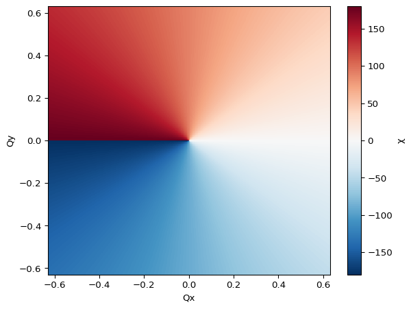
finally we add the new coordinates to the image dataarray
[8]:
da = da_img.assign_coords(Q=Q,CHI=CHI)
da
[8]:
xarray.DataArray
'I'
- Qx: 512
- Qy: 512
- 0.0 0.0 0.0 0.0 0.0 0.0 0.0 0.0 ... 0.0 0.0 0.0 0.0 0.0 0.0 0.0 0.0
array([[0., 0., 0., ..., 0., 0., 0.], [0., 0., 0., ..., 0., 0., 0.], [0., 0., 0., ..., 0., 0., 0.], ..., [0., 0., 0., ..., 0., 0., 0.], [0., 0., 0., ..., 0., 0., 0.], [0., 0., 0., ..., 0., 0., 0.]], dtype=float16) - Qx(Qx)float16-0.6284 -0.626 ... 0.626 0.6284
array([-0.6284, -0.626 , -0.6235, ..., 0.6235, 0.626 , 0.6284], dtype=float16) - Qy(Qy)float16-0.6284 -0.626 ... 0.626 0.6284
array([-0.6284, -0.626 , -0.6235, ..., 0.6235, 0.626 , 0.6284], dtype=float16) - Q(Qx, Qy)float160.8887 0.887 ... 0.887 0.8887
array([[0.8887, 0.887 , 0.8857, ..., 0.8857, 0.887 , 0.8887], [0.887 , 0.8853, 0.884 , ..., 0.884 , 0.8853, 0.887 ], [0.8857, 0.884 , 0.882 , ..., 0.882 , 0.884 , 0.8857], ..., [0.8857, 0.884 , 0.882 , ..., 0.882 , 0.884 , 0.8857], [0.887 , 0.8853, 0.884 , ..., 0.884 , 0.8853, 0.887 ], [0.8887, 0.887 , 0.8857, ..., 0.8857, 0.887 , 0.8887]], dtype=float16) - CHI(Qy, Qx)float16-135.0 -134.9 -134.8 ... 45.1 45.0
array([[-135. , -134.9 , -134.8 , ..., -45.22, -45.1 , -45. ], [-135.1 , -135. , -134.9 , ..., -45.1 , -45. , -44.94], [-135.2 , -135.1 , -135. , ..., -45. , -44.9 , -44.8 ], ..., [ 135.2 , 135.1 , 135. , ..., 45. , 44.9 , 44.8 ], [ 135.1 , 135. , 134.9 , ..., 45.1 , 45. , 44.94], [ 135. , 134.9 , 134.8 , ..., 45.22, 45.1 , 45. ]], dtype=float16)
- lazy :
- False
we can use these multidimensional coordinates to extract an annulus
[9]:
da.where(((da.Q>0.15) & (da.Q<0.35))).plot(norm=LogNorm(1e-16,1e-4))
[9]:
<matplotlib.collections.QuadMesh at 0x7fb909cc7048>
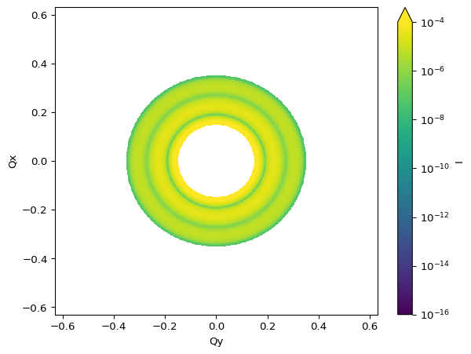
or a sector
[10]:
da.where((np.abs(da.CHI)>75) & (np.abs(da.CHI)<105)).plot(norm=LogNorm(1e-16,1e-4))
[10]:
<matplotlib.collections.QuadMesh at 0x7fb908f03438>
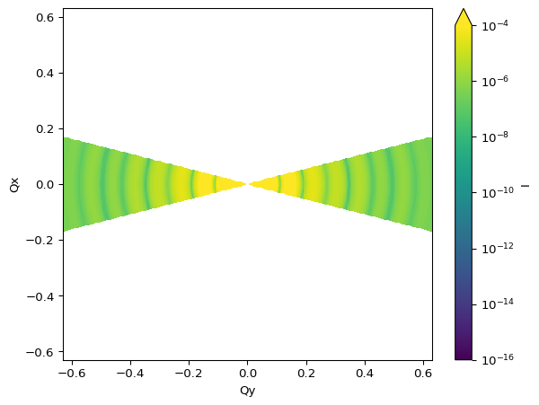
we can also use the multidimensional bins for groupby operations
[11]:
for i,sda in da.groupby_bins('Q',np.geomspace(1e-3,3.0,10),restore_coord_dims=True):
fig,ax = plt.subplots()
sda.unstack().sortby(['Qx','Qy']).plot(norm=LogNorm(1e-16,1e-4))
ax.set(title=i)
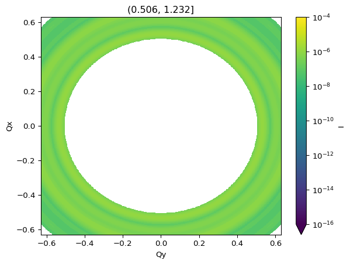
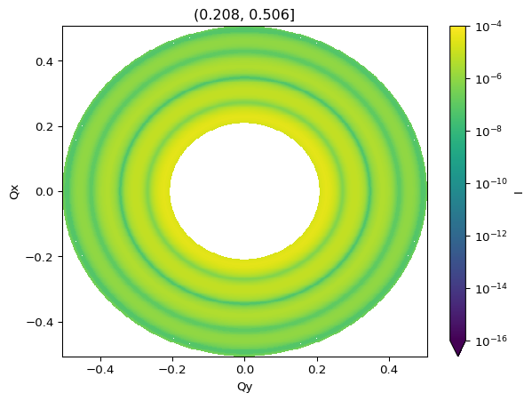
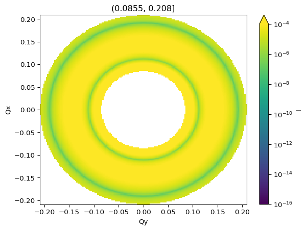
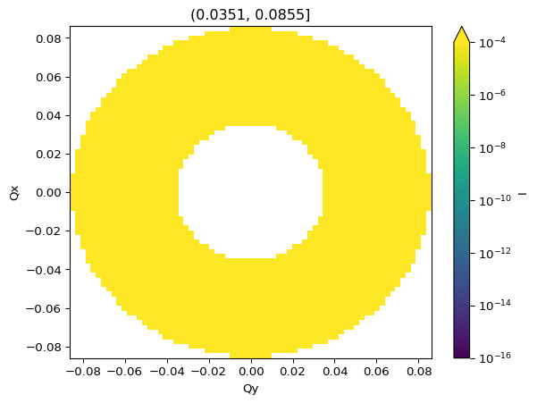
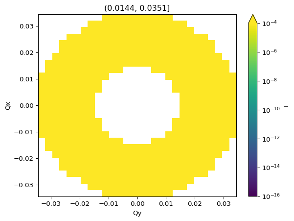
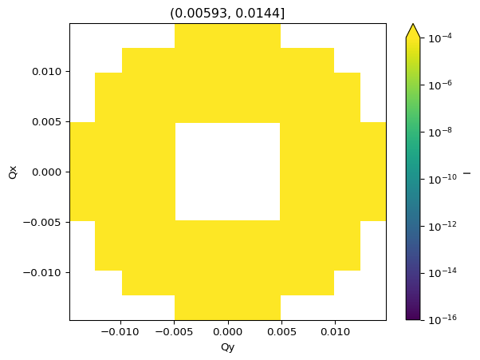
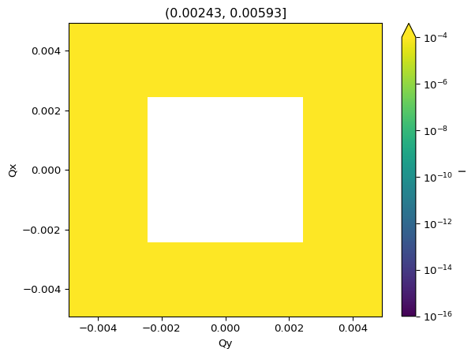
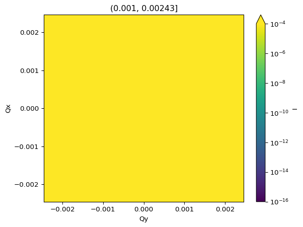
[12]:
group = (da
.groupby_bins('Q',np.geomspace(1e-3,3.0,10),restore_coord_dims=True)
.apply(lambda x: x.groupby_bins('CHI',np.arange(-180,180,5)).mean())
)
group.plot.line(x='CHI_bins')
plt.gca().get_legend().set_visible(False) # The legend isn't helpful; just hide it.
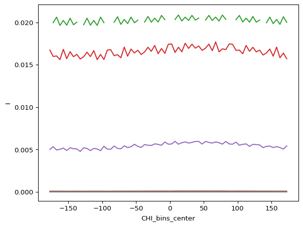